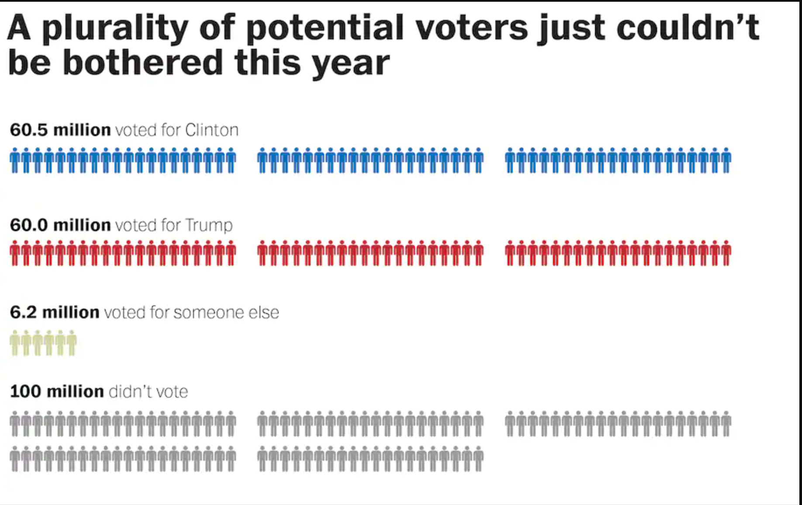
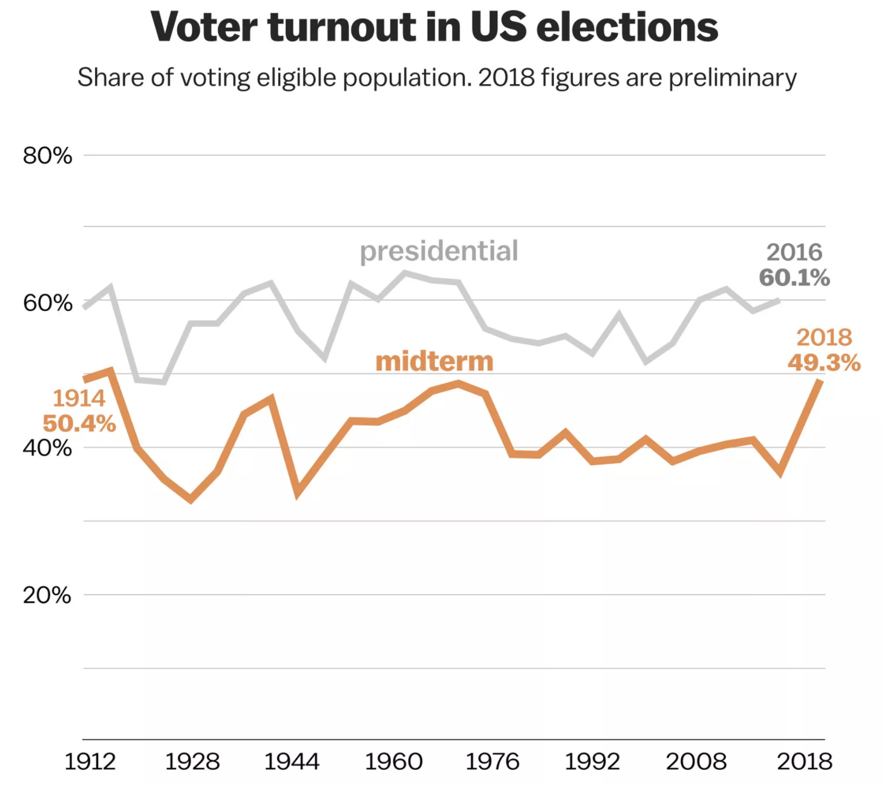

Above are two graphs. The first shows voter turnout for the 2016 presidential election and the second shows the 2018 midterm election which had the highest turnout rate since 1914. To put into perspective, The United States has a population of roughly 328 million people. That means roughly a third of Americans did not vote during the presidential Election. That is abysmal, and our "RECORD" number of voter turnout is BARELY half. We have got to do better. Change will not happen unless each and every person fights for a better tommorrow. It's Gonna take all of us so GO VOTE!!!!!!!